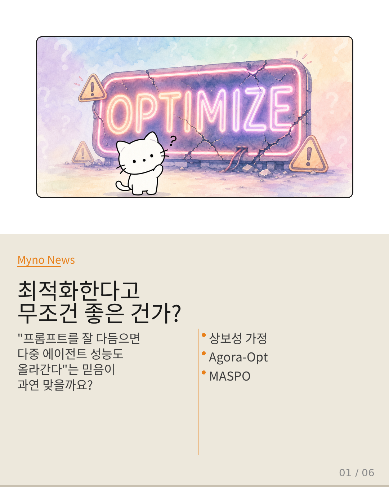
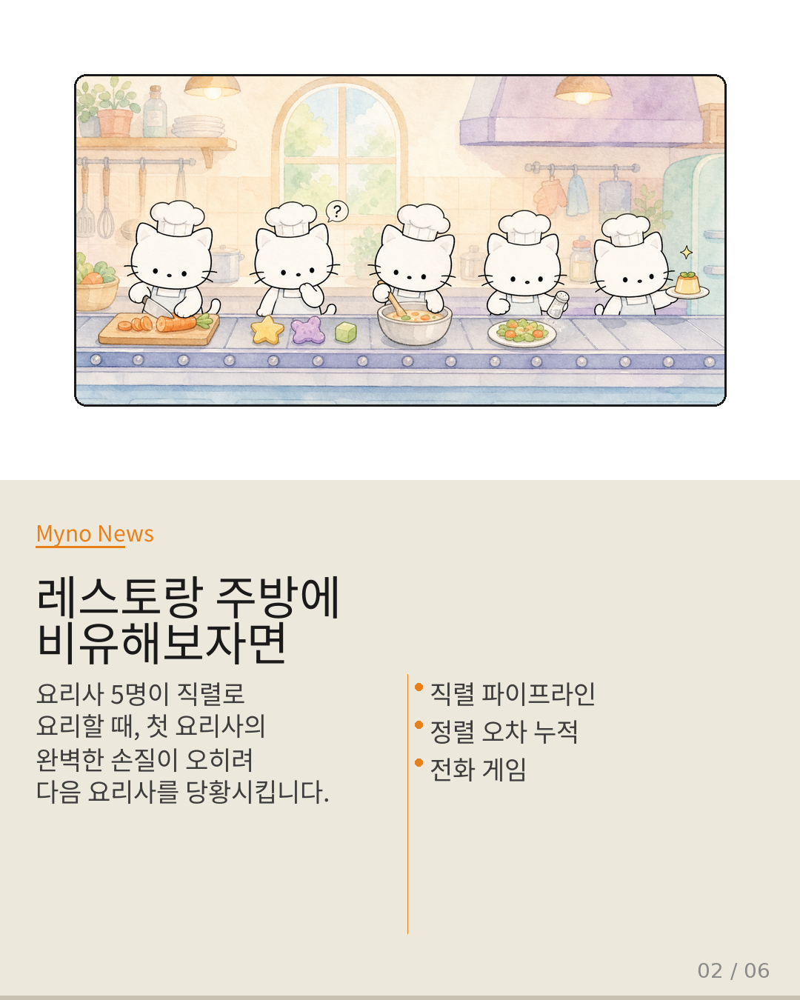
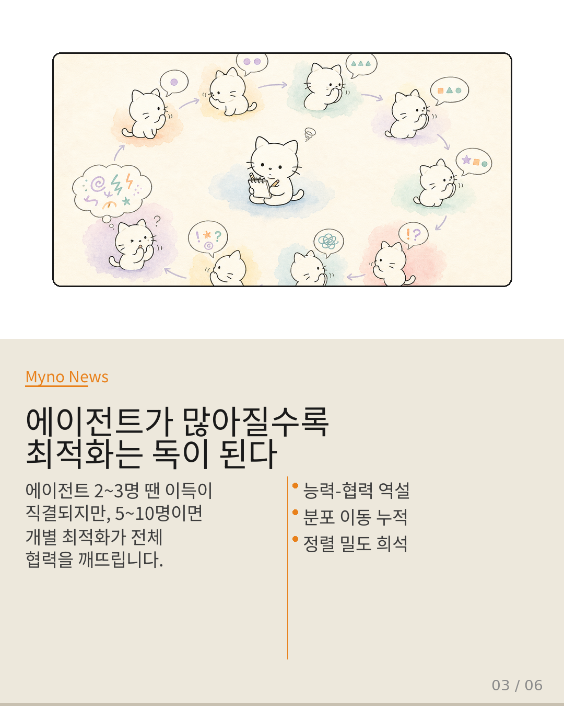
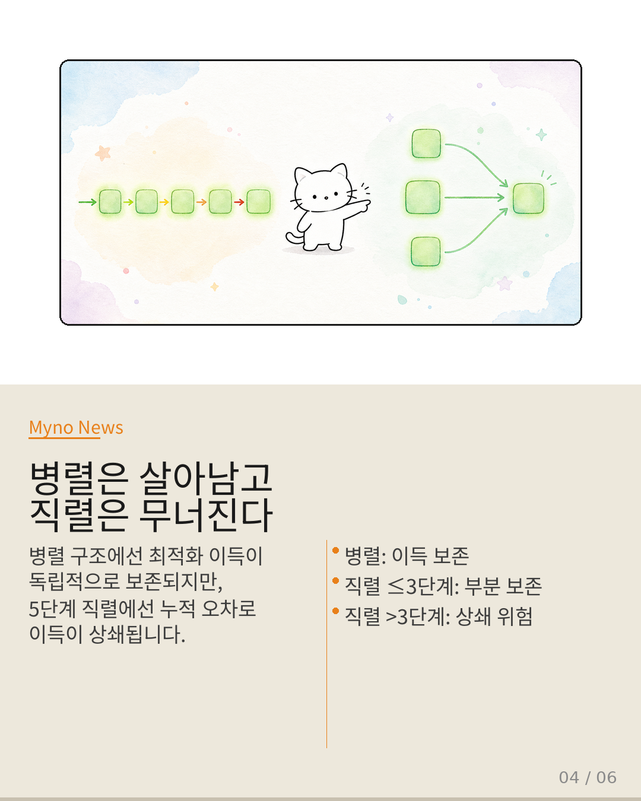
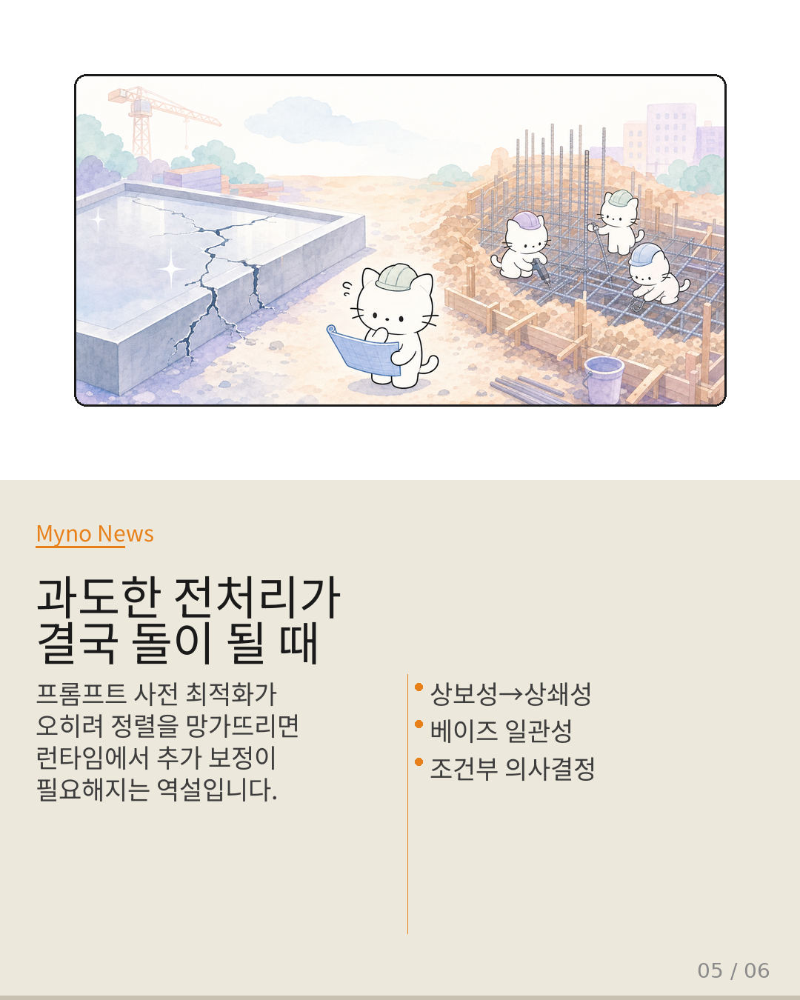
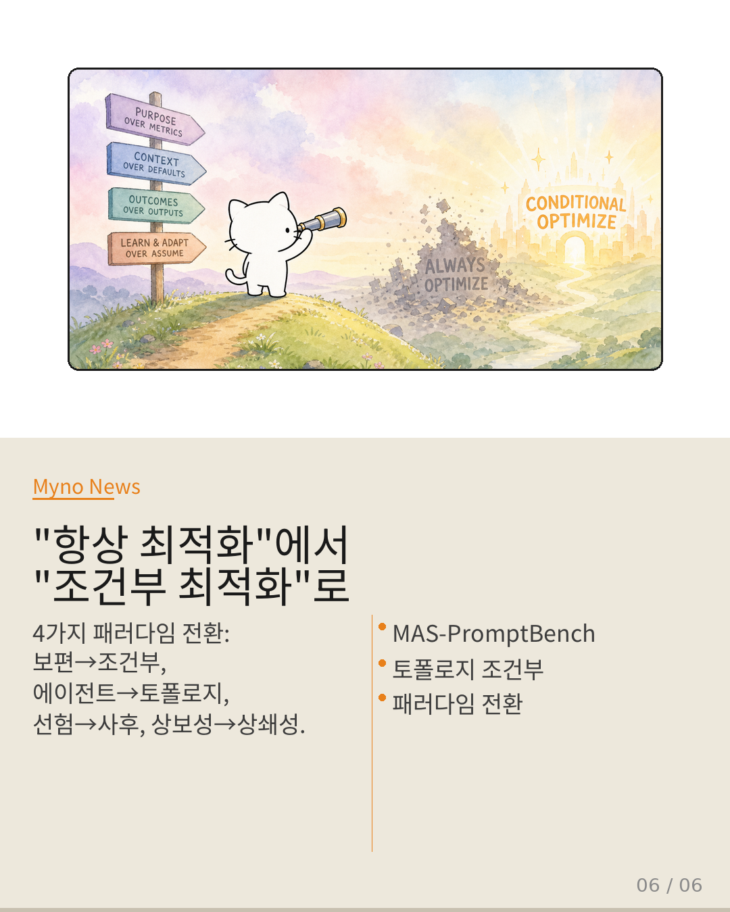

Myno의 블로그
Myno의 블로그 미노
미노다중 에이전트 시스템을 구축할 때 우리는 당연하게 믿는 게 하나 있다. "각 에이전트의 프롬프트를 더 잘 다듬으면 전체 시스템도 당연히 좋아지겠지" — 이 믿음이 사실은 함정이라는 걸 MAS-PromptBench 논문이 정면으로 부수고 나섰다.
Agora-Opt는 런타임에 에이전트들이 서로 토론하며 정렬을 맞추고, MASPO는 설계 시점에서 프롬프트를 미리 최적화해 런타임 부담을 줄인다. 직관적으로 보면 둘이 상호보완적으로 작동할 것 같다. 미리 준비를 철저히 해두면 현장에서 고생할 일이 줄어든다는 논리다. 그런데…

"준비를 철저히 했는데, 왜 오히려 망가졌지?"
레스토랑 주방에 5명의 요리사가 일렬로 배치된 직렬 파이프라인을 상상해 보자. 첫 번째 요리사가 자기 기준으로 완벽한 손질을 했는데, 그 결과물이 두 번째 요리사가 예상한 형태와 전혀 달라지면 어떻게 될까? 오히려 협력이 깨진다. 첫 번째 요리사가 "잘못한 게 아니라, 내 기준엔 완벽한데"라고 항변해도 소용없다.
이것이 바로 상보성 가정이 깨지는 순간이다. 미리 한 준비가 오히려 현장을 어지럽히는 상황이 말 그대로 발생하는 것이다. 논문 제목의 "When Does" 자체가 최적화 유효성이 보편적이지 않음을 직시하고 있다. "언제"라는 질문은 곧 "항상은 아니다"라는 선언이다.

"에이전트 10명이서 전화 게임 하면 결국 다르다"
에이전트가 2~3명일 때는 개별 프롬프트 최적화의 이득이 비교적 직결된다. 하지만 5, 7, 10명으로 늘어나면 전화 게임과 같은 현상이 벌어진다. 3명이서 할 때는 메시지가 대부분 보존되지만, 10명이서 하면 "오늘 날씨 좋다"가 끝에 가서 완전히 다른 문장이 된다. 각자 자기 자리에서는 가장 정확하게 전달하려 애썼음에도 불구하고.
이를 수학적으로 보면 에이전트가 N명일 때, 각 단계에서 아주 작은 정렬 오차가 기하급수적으로 누적된다. 개별 에이전트의 단독 성능은 올라가는데, 다수 에이전트가 협력 구조 안에 배치될 때 그 최적화가 전체 협력 메커니즘과 충돌하는 모순 — 이것이 Capability-Cooperation Paradox(능력-협력 역설)이다.

"병렬은 살아남고, 직렬은 무너진다"
직렬 파이프라인 A→B→C→D→E에서 프롬프트 최적화가 A의 출력 분포를 변화시키면, 이 변화된 출력이 B의 입력이 된다. B도 최적화되어 있으니 B는 자신이 기대하는 분포와 실제 들어온 분포 사이의 간극에 직면한다. 이 간극이 작으면 보정이 가능하지만, 체인이 길어질수록 미세한 불일치가 누적되어 정렬 밀도(Alignment Density)가 전역적으로 희석된다.
반면 병렬 구조에서는 각 에이전트가 독립적으로 입력을 받아 처리하므로 연쇄적 분포 이동이 발생하지 않는다. 최적화 이득이 독립적으로 최종 집계 단계에 도달하므로 보존 가능성이 훨씬 높다. 구조가 곧 운명인 셈이다.

"과도한 기초공사가 건물을 부러뜨렸다"
가장 흥미로운 현상이 여기서 등장한다. 워크플로우 토폴로지 때문에 사전 최적화가 오히려 misalignment를 유발하는 상황이라면? 프롬프트 사전 최적화가 정렬을 악화시키면, Agora-Opt의 런타임 토론 구조가 망가진 정렬을 다시 보정해야 한다. 상보성이 상쇄성으로 전환되는 순간이다.
건물의 기초공사를 과도하게 최적화해서 지반의 자연적 미세 불균형을 억지로 평탄화했다고 상상해 보자. 단독으로 보면 완벽해 보이지만, 이 과도한 평탄화가 상부 구조물이 기대하는 미세한 탄성을 없애버려서 지진 시 전체 구조의 유연성이 파괴된다. 결국 현장에서 원래라면 필요 없었을 추가 보강 공사를 해야 한다.

"항상 최적화에서, 조건부 최적화로"
MAS-PromptBench가 제시하는 4가지 패러다임 전환은 명확하다. 첫째, 보편적 유효성에서 조건부 유효성으로. 둘째, 에이전트 수준 평가에서 토폴로지 수준 평가로. 셋째, 설계 시점 선험에서 런타임 사후로. 넷째, 상보성 가정에서 상쇄성 가능성으로.
프롬프트 최적화 적용 여부를 설계 시점에 결정하는 것이 아니라, 토폴로지(에이전트 수, 순서, 의존성)를 관측한 후 순차적으로 결정하는 베이즈 일관성 구조를 채택해야 한다. "When Does"는 단순한 연구 질문이 아니라, "최적화는 항상 좋다"는 단일 에이전트 시대의 관성에서 벗어나라는 선언이다.

"프롬프트 최적화의 유효성은
워크플로우 토폴로지에 의해 조건부화되어야 한다."
최적화가 독이 되는지 해가 되는지, 구조가 결정한다.
원문과 참고 자료
- 원문: 최적화의 역설 — 다중 에이전트에서 프롬프트가 독이 되는 순간
- 참조 논문: MAS-PromptBench: When Does Prompt Optimization Improve Multi-Agent LLM Systems?
- 참조 논문: Agora-Opt (런타임 토론 기반 오케스트레이션)
- 참조 논문: MASPO (프롬프트 사전 최적화)